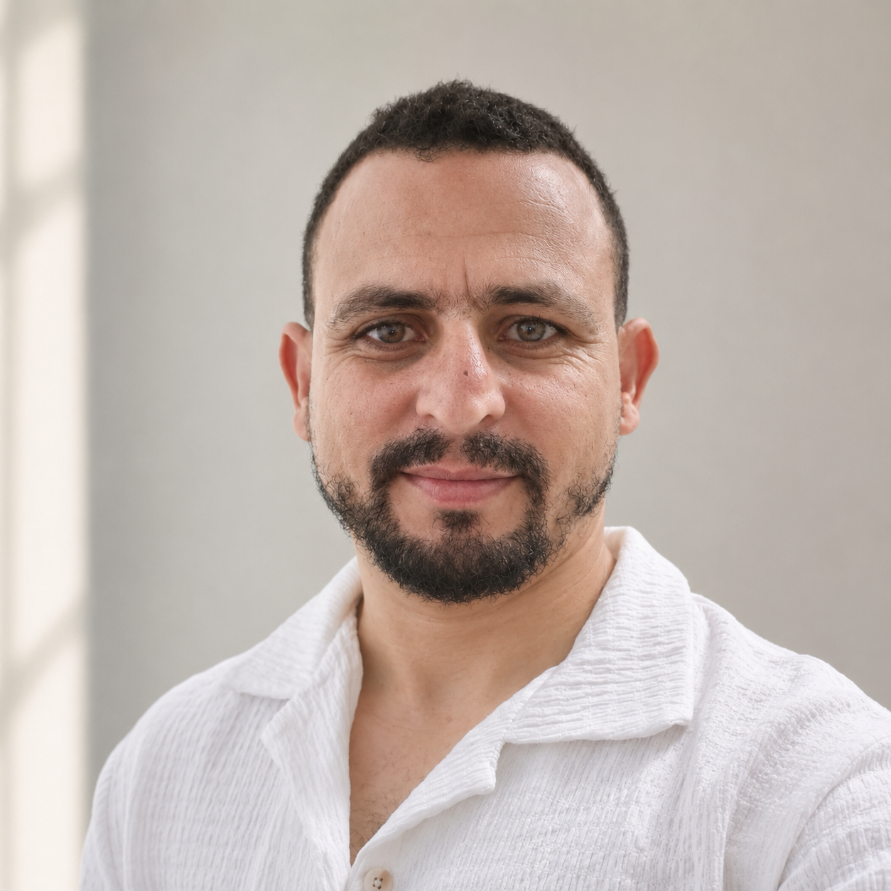

01
ERP & fonctionnel
Intégration, paramétrage, analyse des besoins, déploiement, démarrage et accompagnement post-déploiement.
Consultant ERP · Technico-fonctionnel
Déploiement ERP, intégration, tests, support applicatif, SQL et formation utilisateurs — avec une approche terrain : comprendre le besoin, faire fonctionner la solution et accompagner les équipes jusqu'à l'autonomie.

Ce que j'apporte
Je ne me limite pas à installer un logiciel. Je travaille entre le client, les utilisateurs et l'équipe technique pour faire avancer le projet de bout en bout.
Intégration, paramétrage, analyse des besoins, déploiement, démarrage et accompagnement post-déploiement.
Diagnostic d'incidents, résolution, suivi des réclamations, escalade et coordination jusqu'à clôture.
Requêtes, extraction, migration, validation de traitements sur SQL Server, PostgreSQL et Supabase.
Scénarios métier, recette applicative, formation utilisateurs et accompagnement adapté au niveau de chaque équipe.
Python, JavaScript, C#, ASP.NET, PHP, React Native CLI, Node.js et Android au service de projets concrets.
Écoute, pédagogie, adaptation interculturelle et capacité à faire le lien entre utilisateurs, métier et développement.
Expérience
Depuis novembre 2019 chez CLINISYS, j'interviens sur des projets ERP dans la santé, mais aussi dans le commerce et l'industrie.
CLINISYS SARL · Tunisie / Maroc / À distance
Déploiements, paramétrage, analyse des besoins, préparation des environnements, tests fonctionnels, migration de données, support et formation. Coordination avec l'équipe de développement pour prioriser et clôturer les demandes.
Maroc · Support à distance
Analyse des incidents, suivi des demandes et coordination avec l'équipe technique après les déploiements marocains.
Maroc · Tunisie
Tarik Ibn Ziad, Riad Marshan, FSI Aouina et HFSI : accompagnement opérationnel, formation, suivi des anomalies et assistance aux utilisateurs pendant les phases critiques de lancement.
Quelques missions
Les projets les plus intéressants sont souvent ceux où la technique n'est qu'une partie du problème.
Plusieurs mises à niveau ERP, avec paramétrage, tests, formation, migration et accompagnement au démarrage.
Passage du papier vers une solution Web & Android. Formation adaptée, suivi individuel et autonomie atteinte à la clôture.
Adaptation à une nouvelle équipe et à un contexte culturel différent, avec démarrage opérationnel en trois mois.
Mise en place d'une formation inter-collègues et d'un groupe WhatsApp pour maintenir la transmission malgré les départs.
Projets personnels
Ces projets me permettent d'aller plus loin dans le développement, l'architecture, les bases de données et le mobile.
Patient File Pro
Solution née d'un besoin réel d'un médecin : application web, application Android synchronisée et version locale avec gestion des licences.
Tunisie Prayer
Application Android React Native CLI avec calcul des horaires selon la méthode officielle tunisienne, personnalisation et prise en charge de Qalun et Hafs.
Environnement technique
Avant CLINISYS
Avant 2019, j'ai travaillé dans la maintenance informatique, la gestion de parc, les réseaux, la gestion commerciale, les achats, le stock, la facturation et la relation client.
Cette expérience m'aide aujourd'hui à comprendre ce qui se passe derrière une demande utilisateur, mais aussi autour du logiciel : matériel, réseau, organisation et habitudes de travail.
Un projet, une opportunité ?
ERP, support applicatif, déploiement, migration, tests, formation ou projet digital : je suis ouvert aux échanges professionnels.